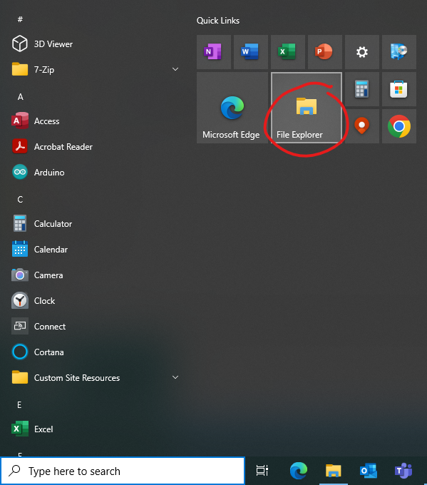
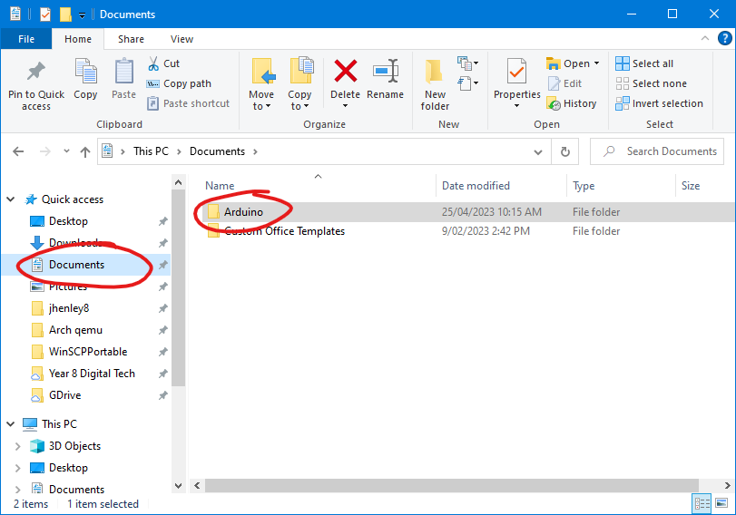
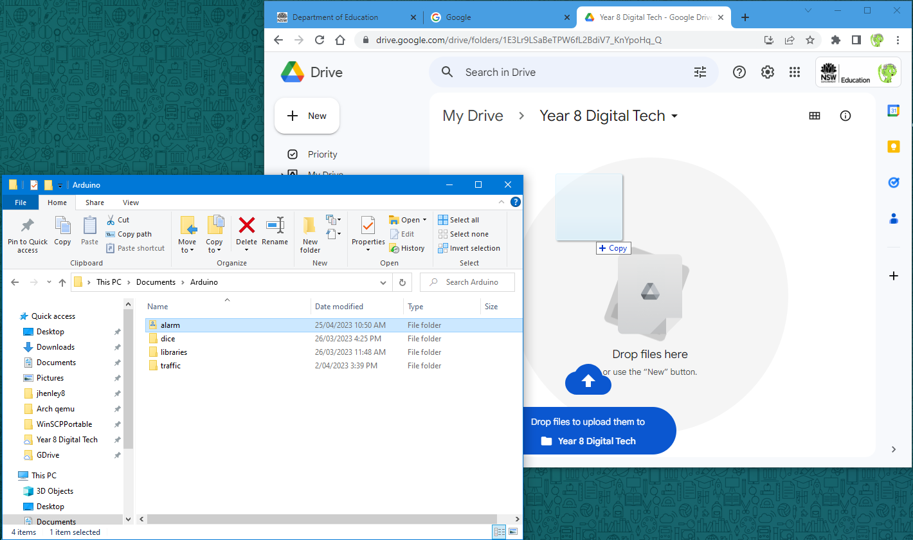

I1 — Put a sketch into Google drive



Learn Arduino



Author: Jared Henley
Copyright: © State of NSW 2023 (Department of Education) 
Except as otherwise noted, all material in this website is licensed under a Creative Commons Share Alike Licence (CC-BY-SA).
Credits for material from third parties
Built with 0cms.
Last built: 2023-05-05 12:04:59.571095
Last modified: 2023-04-25 15:17:15.130299